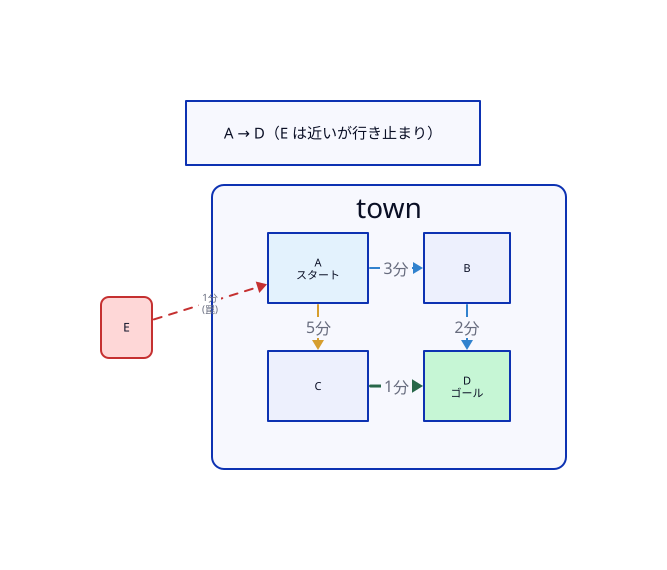

第1章：カーナビの裏側〜いちばん早い一本を見つける〜
0. なぜこの章を学ぶのか（価値・目的・意味）
価値（何を目指すか）
スマホの地図を開いて目的地を入れると、ほとんど待たずに 「いちばん早いルート」 が出てくる。
道路は日本中に数えきれないほどあるのに、なぜ一瞬で「これが最速」と言えるのか——その裏側を、自分の頭で追えるようになることが、この章の価値です。
目的（何を成すか）
同じ小さな町のマップを使って、次の二つを 最初から最後まで 体験する。
- ダイクストラ法 … 「いままで走った時間」だけで探す
- A*（エー・スター） … 「走った時間」に「ゴールへの磁石（見込み）」を足して探す
終わったあと、「どちらが・何を見て・なぜその一手を選んだか」を、自分の言葉で言えるようにする。
意味（各手段の役割）
| 登場するもの | 役割（この章での意味） |
|---|---|
| 点と線の地図 | 写真の代わりに、計算できる形へ町を翻訳する |
| ダイクストラ法 | 「近い交差点から順に確かめる」基本の探し方 |
| 行き止まり E | 近いのにゴールと逆——手法の差を見せるための罠 |
| A* の磁石 $h$ | 「ゴールから遠ざかる道」を後回しにするための点数 |
| スコア $f=g+h$ | 候補どうしを 同じものさし で比べるための合計点 |
読み方の約束: まず物語（コマ送り）を最後まで読む。細かい前提や専門用語は、章末の「もう一歩深く」にまとめてある。
1. 地図を「点と線」に翻訳する
ナビは道路の写真を見ていない。町を次のように言い換える。
| 日常の言葉 | この章での言い方 | 注意 |
|---|---|---|
| 交差点・駅 | 点（頂点／ノード） | ここでのノード＝交差点。後の章の「ZDDのノード」とは別物 |
| 道路 | 線（辺／エッジ） | |
| かかる時間 | 重み（コスト） | 「短い」＝時間が少ない、の意味で使う |
今回の町は交差点が5つ。やることば スタート A から ゴール D へ、いちばん早いコースを見つける ことだけ。

- A → E : 1分（すごく近い！ でも北の行き止まり）
- A → B : 3分
- A → C : 5分
- B → D : 2分
- C → D : 1分
なぜこの町なのか（コントラストの仕込み）
もし「近い道」が全部ゴール向きなら、どんな探し方でも同じに見えてしまう。
だからわざと、近いのにゴールと真逆の罠（E） を置いた。
ダイクストラ法はこの罠に引っかかり、A* は引っかからない——その差を、目で追えるようにするためだ。
2. 世界線①：ダイクストラ法でゴールまで完走する
ここでは ダイクストラ法だけの物語 を、スタートからゴールまで一気に見る。
（A* の話は、この物語が終わってから。）
ルール（人間の言葉）
「スタートから、これまでに確定した所要時間がいちばん小さい交差点から、順に確かめていく。
ゴールがどっちかは見ない。近いところから触る。」
イメージは、池に石を投げたときの波紋。近い場所から円く広がっていく。
コマ送り実況
コマ1：A にいる（0分）
A から一本で行ける場所と、そこに着く時間は次の三つ。
| いま比べているもの | 到着時刻（Aから） |
|---|---|
| 交差点 E | 1分 |
| 交差点 B | 3分 |
| 交差点 C | 5分 |
ここで大事な約束（比較の3要素）:
- 比較対象: 「A から次に確かめたい交差点」どうし（E・B・C）。ゴールまでの完成ルートどうしではない
- 比較方法: A からの所要時間（分）だけ
- 選択の根拠: いちばん小さい数字を先に確かめる
→ いちばん小さいのは E（1分）。先に E へ行く。
コマ2：E に着いた……が、行き止まり
E は北の行き止まり。ゴール D へ続く道がない。
「近いから先に来たのに、何も進まなかった」——これがダイクストラ法の弱点の正体だ。
コマ3：次に近い B へ
残りの候補では B（3分）が次に小さい。B へ進む。
B から D へは 2分なので、
よみ: 「エーからビーを通ってディーまで、合計5分」
ゴール D に到着！
コマ4：念のため、もう一本の完成コースと比べる
完成したコースどうしなら、同じものさし（ゴールまでの合計時間）で比べてよい。
| 比較対象（完成コース） | 合計時間 | 判定 |
|---|---|---|
| A → B → D | 5分 | 採用（短い） |
| A → C → D | 5 + 1 = 6分 | 不採用 |
選択の根拠: ゴールまでの合計が少ない方。
世界線①のまとめ（膝打ちポイント）
ダイクストラ法は、正しい最短（この町では5分）にたどり着ける。
ただし途中で、ゴールと関係ない 近い罠 E にも必ず寄ってしまう。
「近い順」だけ見ているからだ。
思考実験（クリック）: あなたなら E に行きますか？
人間の直感は「ゴールは南なのに、北の行き止まりに寄る？」と疑う。
でもダイクストラ法のルールには「方角」がない。数字が小さい方へ進むだけ。
このズレを埋めるのが、次の世界線（A*）の磁石である。
3. 世界線②：A* でゴールまで完走する
ここからが A* だけの物語。同じ町・同じスタート／ゴールで、最初からやり直す。
（さっきのダイクストラ法の途中経過とは混ぜない。）
ルール（人間の言葉）
「走った時間」だけじゃ足りない。
各交差点に、ゴールへ引っ張る磁石の強さ を足して点数にし、点数の小さい方から進む。
- $g$（ジー）: スタートからここまで、実際にかかった時間
- よみ: 「これまで走った分」
- $h$（エイチ）: ゴールまでの見込み（この章では「直線でだいたい何分？」の磁石）
- よみ: 「ゴールへの近さの見積もり」
- $f$（エフ）: $g + h$
- よみ: 「これまで＋これから見込み、の合計点。小さいほど優先」
よみ: 「合計点エフは、走った時間ジー足すゴールへの磁石エイチ」
この町の磁石 $h$（ゴール D まで）
| 交差点 | 磁石 $h$ | 人間の感覚 |
|---|---|---|
| E（北の行き止まり） | 10分 | ゴールから真逆で遠い |
| B | 2分 | ゴールに近い |
| C | 4分 | そのあいだ |
| D | 0分 | もうゴール |
※ $h$ の数字は「差が分かるように置いた説明用の磁石」である。厳密な座標計算ではない（詳細は章末）。
コマ送り実況
コマ1：A から見える三つの候補に、磁石を足す
比較対象は、またしても「次に進みたい交差点」どうし（E・B・C）。
比較方法は、共通のものさし $f = g + h$。
途中の到着時刻と、完成ルートの合計を混ぜて比べない。
| 比較対象 | 走った時間 $g$ | 磁石 $h$ | 合計点 $f$ | 判定 |
|---|---|---|---|---|
| E 行き | 1分 | 10分 | 11 | 後回し（点数が大きい） |
| B 行き | 3分 | 2分 | 5 | 最優先（いちばん小さい） |
| C 行き | 5分 | 4分 | 9 | 後回し |
選択の根拠: 合計点 $f$ がいちばん小さい B を先に進む。
ここで膝を打つところ:
E は「1分」と近い。でも磁石が「10分」と重い。
合計11点になって、「いま行く価値が低い」と判定される。
近い罠に、磁石がブレーキをかけた。
コマ2：B へ直行し、ゴール D へ
B から D へ 2分。
$$ g = 3 + 2 = 5\text{分},\quad h = 0,\quad f = 5 $$よみ: 「ビー経由でディー到着。走った時間は5分。ゴールに着いたので磁石はゼロ。合計点も5」
この物語では、E にも C にも寄り道せず、A → B → D（5分） でゴールできた。
世界線②のまとめ（膝打ちポイント）
A* は、同じ最短ルート（5分）にたどり着きながら、
ゴールから遠ざかる近い道（E）を、最初の一手で選ばずに済んだ。
磁石 $h$ が、「近いけど逆方向」を点数で不利にしたからだ。
4. 二つの世界線を並べて比べる
両方の物語が完走したので、ここで初めて並べる。
| 比較対象 | 見ているもの | この町での動き | 見つかった最短 |
|---|---|---|---|
| ダイクストラ法 | 走った時間 $g$ だけ | 近い罠 E に先に寄る | A→B→D（5分） |
| A* | 走った時間 $g$ ＋ 磁石 $h$ | E を後回しにし、B へ直行 | A→B→D（5分） |
- 比較方法: 同じ町・同じスタート／ゴールでの「寄った交差点」と「最終の最短時間」
- 選択の根拠（使い分け）:
- 「必ず近い順で確かめたい／磁石の付け方が難しい」→ ダイクストラ法でもよい
- 「ゴール方向を優先して無駄を減らしたい」→ A*
どちらも いちばん早い一本 を目指す仲間。差は「無駄な寄り道をどれだけ減らせるか」。
ミニ対話: 「Eに騙されない」って、Eを一生見ないということ？
この町の物語では、最初の一手で E を選ばなかった、という意味。
磁石の付け方やマップによっては、あとから E 側を調べることもある。
大事なのは「近いという理由だけで逆方向へ飛びつくのを止められる」こと。
5. 理解チェック（学びのあとで）
問題
なぜ A* は、超近い「E（1分）」に最初の一手で行かなかったのか。
と と を使って説明してみよう。
答えと解説（クリックして開く）
E は走った時間 $g=1$ と小さいが、ゴールへの磁石 $h=10$ が大きい。
合計 $f=11$。一方 B は $g=3$、$h=2$ で $f=5$。
同じものさし $f$ で比べると B の方が小さいので、B を先に進む。
「近い」だけで選ばず、「近い＋ゴールへの見込み」で選んだから、罠 E を踏まずに済んだ。
6. 手を動かす課題
[基礎] コマ送り再現
紙にマップを描き、ダイクストラ法のコマ1〜3を、自分の言葉で実況せよ（「次に選ぶ交差点は○。理由は△」）。
[基礎] 磁石の感触
もし E の磁石 $h$ を 10 ではなく 0 にしたら、A* の最初の一手はどう変わるか。予想を一文で書け。
基礎（磁石）の答え例
$h=0$なら E の $f = 1+0 = 1$ となり、B の $f=5$ より小さくなるので、最初に E を選びやすい（ダイクストラ法に近づく）。
[発展] 同じものさし
「E までの1分」と「A→B→D の5分」を並べて『どちらが良い候補？』と比較してはいけない。なぜか。
発展の答え例
片方は「途中の交差点までの時間」、もう片方は「ゴールまでの完成コース」で、種類が違う。
比較するなら、同じ種類（次に進む交差点どうし／完成コースどうし）に揃える必要がある。
7. もう一歩深く（理論ノート・任意）
主物語が腹に入ってから読む用。中2はスキップして第2章へ進んでよい。
ダイクストラ法の前提（非負コスト）
辺の所要時間がすべて 0 以上のとき、この章の「近い順に確定」が正しく働く。
マイナスの重みがある世界では、別のアルゴリズムが必要になる。
A* が最短を保証する条件（許容的な磁石）
どの交差点でも、磁石 $h$ が「本当に残っている最短時間」を超えないとき、$h$ は許容的（admissible）という。
このとき A* は最適解（いちばん早い一本）を返す。
直線距離は、道が遠回りのとき「控えめな見積もり」になりやすく、許容的になりやすい典型例。
本章の $h$ は説明用の数値である。
ダイクストラ法と A* のつながり
磁石 $h$ をすべて 0 にすると $f=g$ になり、選び方はダイクストラ法と同じものさしになる。
A* は「ゴールの情報を足せるダイクストラ法」と覚えるとつながりやすい。
実務のナビへ
全国規模の道路網では、本章の考え方に加え、道路の階層を使った前計算などでさらに速くしている。
本章はその土台——「一本の最速ルートを、点と線の上でどう探すか」——である。
8. 次章への橋
第1章でできたことは、「いちばん早い一本」を見つける ことだった。
では、修学旅行や配送のように いくつかの街を全部回って戻る となると、候補のルートは何本に増えるのか。
第2章では、樹形図と階乗で「数が爆発する」様子を、目に見える形で数える。